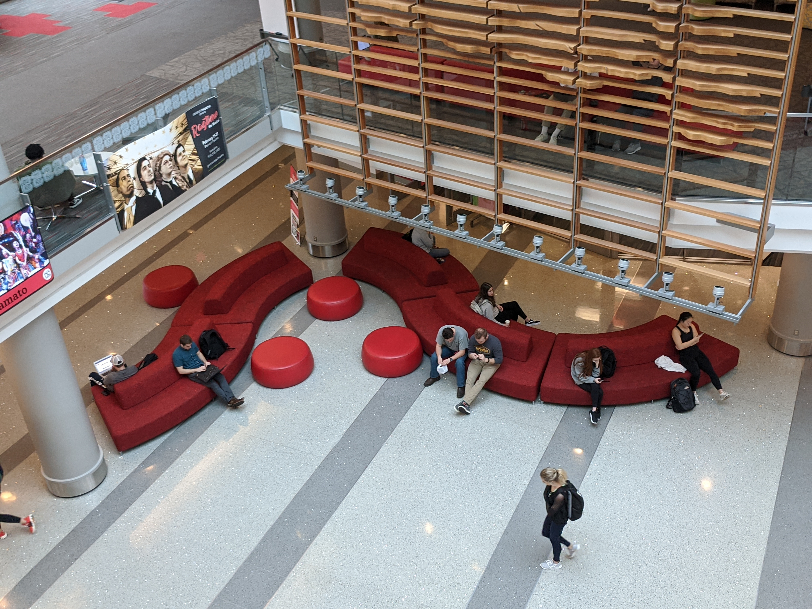

INTRODUCTION
Talley Student Union serves as a flexible space where students can socialize, eat, study, and attend events. From observing the users in Talley, it can be noted that the most common activity users engaged in was studying and working on assignments. Despite Talley primarily designed to be a social setting, the majority of people who use the student union appear to have the task of getting work done in mind. Therefore, to most students, Talley is a popular space for which learning and studying can take place. Learning spaces can be split into two types, which are formal learning spaces and informal learning spaces (Painter, et al 2013). The latter of the two is the category in which both student unions and libraries fall into. Informal learning spaces are loosely defined as spaces that are outside of the classroom. Coffee shops, transitional areas between classes, lobbies, and outdoor spaces are also considered informal learning spaces.

"This looks like a shopping mall. This looks really expensive. I’ve never seen a student center like this. It looks like a hotel even."
The items that students typically have with them include backpacks, notebooks, writing utensils, food and drinks from Talley, water bottles, laptops, earbuds, and their smart phone. Some people also bring their tablet in addition or in place of their laptops to take notes or study. Usually, people’s bags are either on the floor near their chair, or in an empty chair next to them. The other items are typically spread out on the table. Sometimes, the students will have their laptops or notebooks on their lap if there isn’t enough space on the table, when they are with a group or if they are at a small table. The majority of those working alone are wearing headphones. Though the 2nd floor of Talley has a lot of restaurants and seems to be designed as an eating area, there are still many students who use the area to study and work, though many of them also happen to have food with them while working. The upper floors tend to have more people studying, and the environment also suggests that it is designed for this purpose, as there are whiteboards and better lighting.
PREFERENCES
Across the sources that have done research on learning spaces, there are many common themes that can be found. Students prefer environments that are not too noisy, but also not “dead quiet”. They prefer spaces in which they can comfortably talk without lowering their voice. Students also value the kind of furniture that is used, though preferences varied depending on the person and the activity. If their goal is to study, people generally tend to prefer having raised tables with ample space to spread out their things and easy access to power outlets. In one of the Talley interviews, a girl we found lying down on some long seating said that if she was working on math or something, she needs a table, but since she was just sending emails and reading, she’ll just lay down. Many of the studies also found a preference of having natural light and windows shared among the students, which was also something one of the interviewees at Talley preferred.

Another aspect students valued was having flexibility. This means having furniture or other elements that can easily be moved around to personalize their surroundings. Going around Talley, we observed a few groups in which people moved around tables and seating to suit their needs. Compared to the interviews that were conducted in Talley, there are a lot of similarities in the research papers in what students preferred for their study environment. Several of the students that were interviewed in Talley also preferred to have less noise, but at the same time not too little noise. People also liked to have outlets and tables as well, indicating the need for environments that can support technologies such as laptops and tablets, and room for other items such as food, drinks and notebooks.
DISTRACTIONS
When asked about distractions, students in the various studies had distractions which differed based upon the environment. The home environment for example, may be distracting to some because of the overlap of responsibilities in the space. Instead of only having the responsibility of getting schoolwork done, there are also non-school responsibilities that distract students. Such distractions can range from having to do laundry or the dishes to taking care of their dog.
Some individuals interviewed said that they switched locations multiple times during their stay. This is mainly because of distractions or due to a lack of a power outlet. One of the students interviewed commented, “I don’t even really listen to music. I just put my air pods in so people know not to talk to me, because I’m working. Cause I get distracted when I listen to music.”
"I prefer studying alone because when you study with other people you don’t really get much done. So really I prefer studying by myself."
Another person said that something that distracted them in Talley was “Loud people. When groups study out in the open, that’s pretty hard because they’re collaborating and talking and that can get pretty loud. There’s always conferences going around. Which, I appreciate the conferences, cause I go to the conferences at times, but it brings a lot of foot traffic at times, and when I’m studying that gets really distracting as well.” A few people mentioned that they preferred to study alone, since it was more productive for them that way. For instance, one girl said she “likes studying with friends sometimes, but if I’m really trying to get something done go off on my own, the littlest ‘what do you think about this’ can throw me off”.
"I normally go on the fifth floor because Talley is very noisy, especially the second and third floors. "
"We’re able to work around the kids without interrupting them when they’re studying, you know, without interrupting them when they’re eating. We try to stay out of their way just as well as they try to stay out of our way."
A study found that there were almost no significant relationships between a student achieving their study goals and the other measured variables such as study location and length of study time. The lone exception was studying at a desk: 86.8 percent of students who studied at a desk achieved their study goals, as compared to 70.2 percent of students who did not. Also included in their research was how much technology is incorporated during student study sessions and they found that “ the average student in our study uses technology 12.9 times for a total of 50.6 minutes of their 116-minute study session.” This shows that technology significantly impacts how students study, and takes up a sizeable amount of their time. These statistics give a good indication as to why students would want to be near power outlets while studying. According to the report, the top four distractions were roommates, television, telephone, and noise level and crowded spaces. An interesting thing that researchers found in this study was that students said that even though they were not entirely satisfied with a certain location when it did not meet their study goals, they are still reluctant to change their location due to factors like convenience, comfort, and routine.
In the interviews conducted in Talley, students and staff overall had very positive things to say about it and the people there. Sherry, a facilities enhancement technician said, “I haven’t had bad experiences with none of the kids. A lot of them know me by name. A lot of them speak to me. A lot of them say “Can I help you do something?” and a lot of them thank us for the work we do here at Talley.”
When asking students what they think could be improved about Talley, a girl said that “during finals week they have all the rooms open, I know there’s events going on but if there was more seating that would be nice”, and one individual added that a designated quiet area would be nice to have. From this examination, it can be seen that in Talley there is a need for a space that better suits student’s requirements to study effectively, while also being able to have a flexible space that they can personalize.